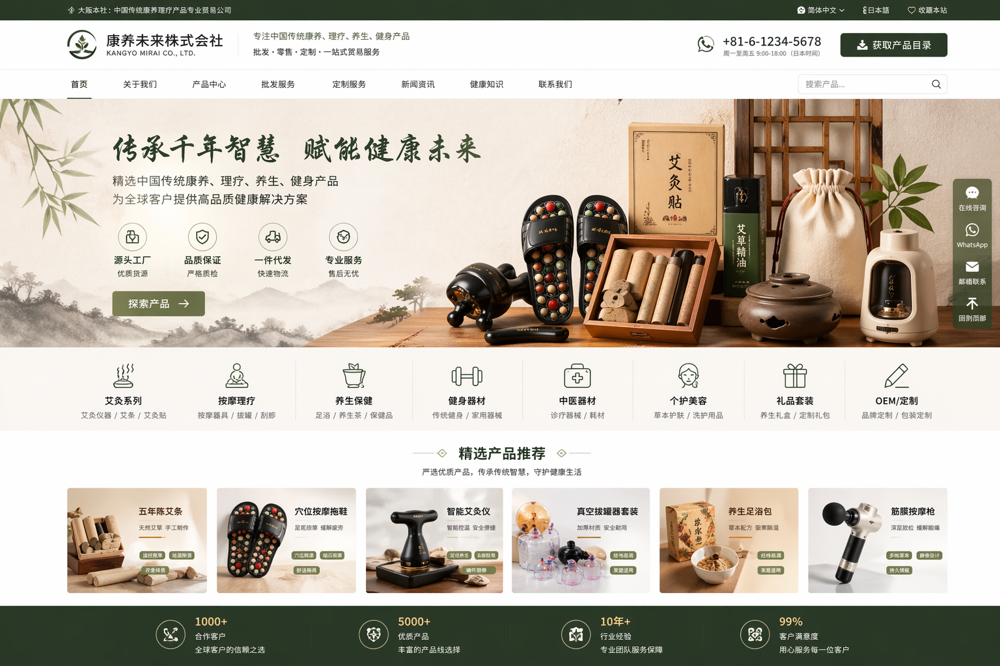
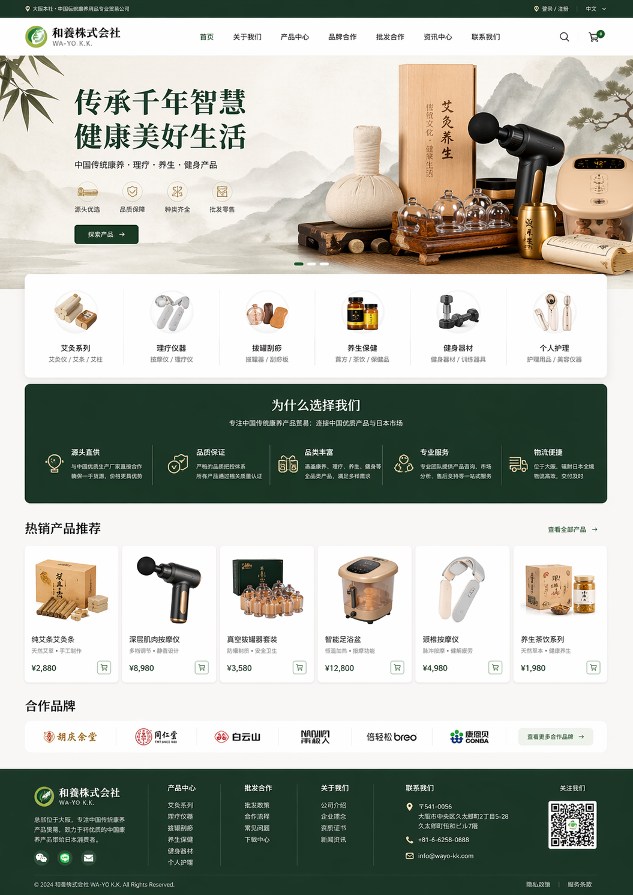
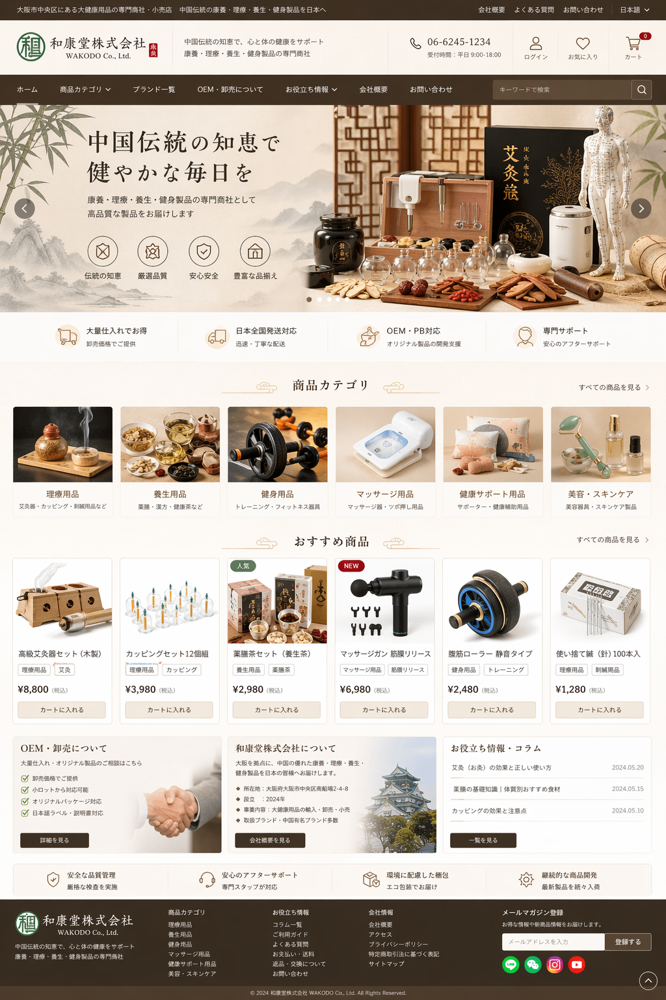
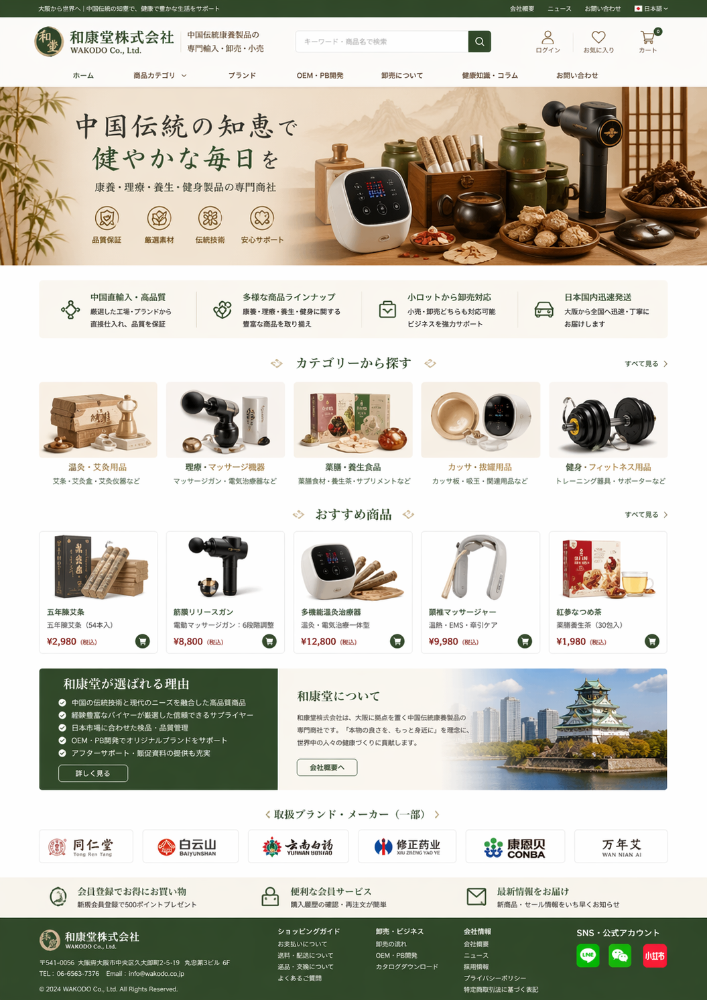

关于我们私たちについて
太旺旺株式会社（taiwannwann）是一家位于大阪的健康用品贸易公司，致力于传播中国传统康养文化。公司主要从中国可信赖的制造商进口家庭健康器材、理疗仪器、养生用品与健身设备，通过自营电商平台和合作伙伴向日本市场批发与零售。 太旺旺株式会社（taiwannwann）は大阪に拠点を置く健康用品の貿易会社です。中国の信頼できるメーカーから家庭用ヘルスケア機器、理療機器、養生用品、フィットネス用品を輸入し、自社ECとパートナー網を通じて日本市場で卸売・小売を行っています。
产品类别商品カテゴリー

传统文化与书画伝統文化と書画
精选古典书画及文化产品，体验中国传统艺术的魅力。厳選した古典書画と文化製品で、中国伝統芸術の魅力を体験できます。

理疗与按摩理療とマッサージ
舒缓身心的经络治疗仪、按摩器和温热理疗设备。経絡ケア機器、マッサージ器、温熱理療機器で心身をやさしく整えます。

养生枕与保健養生まくらと健康ケア
采用天然材料，提供舒适支持的健康枕头与保健用品。天然素材を使った快適なサポート枕と健康ケア用品を提供します。

健身器材フィットネス用品
活力满满的健身器材，如皮革跳绳等，让运动更有趣。レザージャンプロープなど、毎日の運動を楽しくする器具を揃えています。
批发与零售卸売・小売
我们为个人消费者提供便捷的在线购物体验，同时向医疗机构、健身房及零售商提供批发服务。欢迎联系我们洽谈合作，共同推广健康生活方式。 個人のお客様には便利なオンライン購入体験を、医療機関・ジム・小売事業者には卸売サービスを提供しています。健康的なライフスタイルの普及に向け、ぜひご相談ください。
联系我们お問い合わせ
地址：日本大阪市住所：日本・大阪市
邮箱：info@taiwannwann.co.jpメール：info@taiwannwann.co.jp
电话：+81（90）9313 9751電話：+81（90）9313 9751